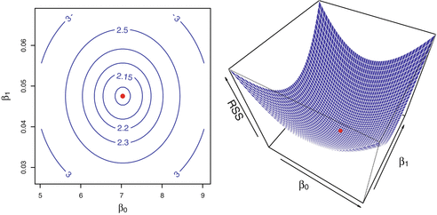
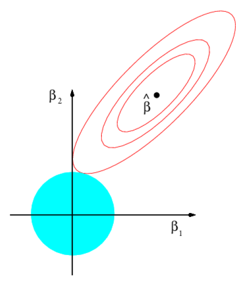
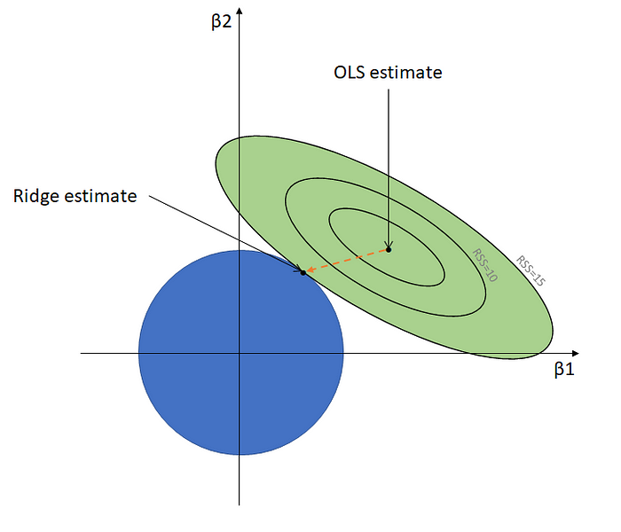
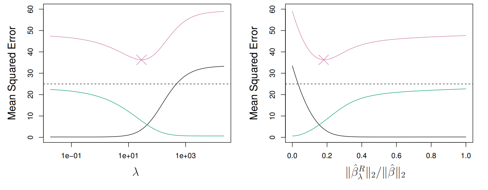
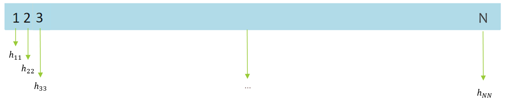
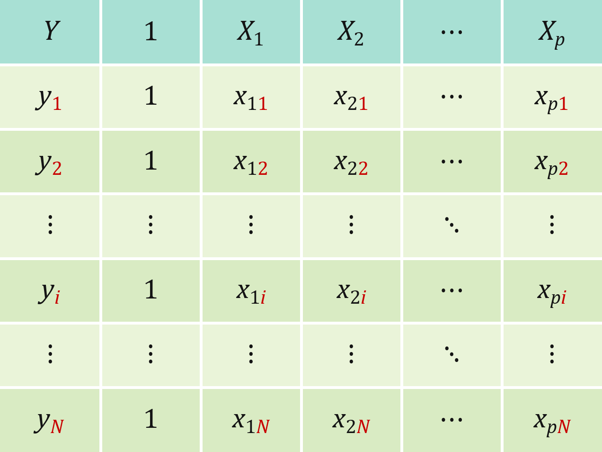
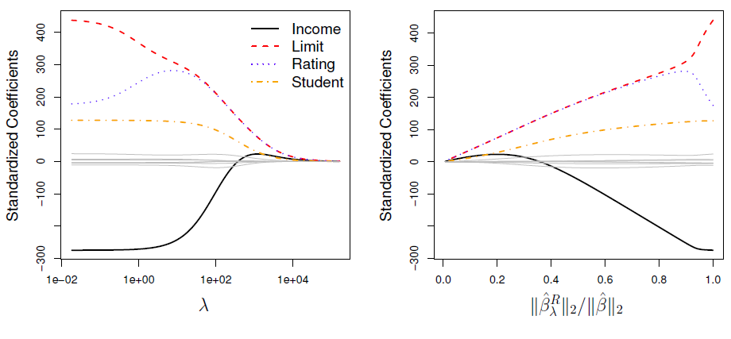
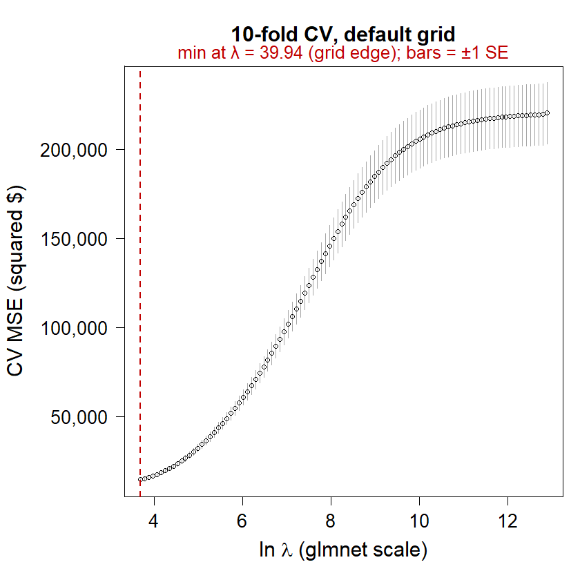
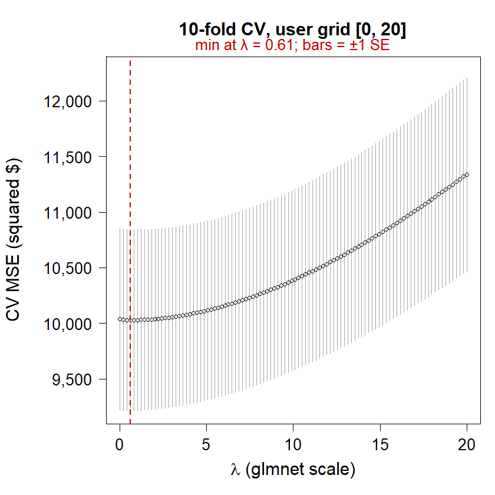
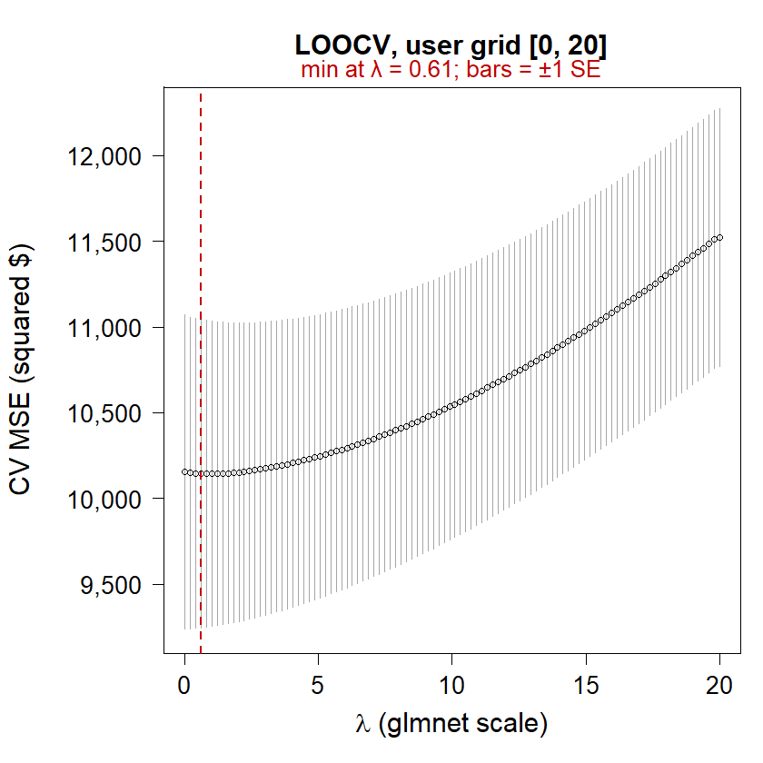

Chapter 3 – Regression with penalization: Ridge regression
EC4308 · Machine Learning and Economic Forecasting
Vu Thanh Hai
NUS Department of Economics
CHAPTER THREE
Regression with penalization: Ridge regression (with some OLS matrix algebra)
Module Code: EC4308
Module Title: Machine Learning and Economic Forecasting
Instructor: Vu Thanh Hai
Reference: ISLR 6.2.1 (review OLS linear algebra: Stock and Watson, 3rd ed., Section 18.1)
Acknowledgment: adapted from Dr. Denis Tkachenko’s notes with minor modifications. Thanks to Denis!
Lecture outline
Brief review of OLS algebra (matrix form, matrix differentiation).
A shortcut for LOOCV in OLS (hat matrix and leverage).
Why shrink? Drawbacks of subset selection; James–Stein shrinkage.
Ridge regression: estimator, shrinkage and the bias–variance trade-off – with an interactive demo.
Choosing \(\lambda\) by cross-validation.
Application: Credit data. Ridge vs. OLS and best subset.
Concluding remarks and the link to LASSO (next lecture).
Roadmap: ridge = OLS + a penalty on the size of \(\beta\). To derive it, and to tune \(\lambda\) cheaply by leave-one-out CV, we first need OLS in matrix form; the hat-matrix LOOCV shortcut is what makes cheap tuning of \(\lambda\) possible.
OLS with one regressor (scalar notation)
Our OLS model: \(Y_i = \alpha + \beta X_i + u_i\)
To find the best linear model, we minimize \(\sum_{i=1}^{N}\left(Y_i - \alpha - \beta X_i\right)^2\); the first-order conditions are \[\text{w.r.t. } \beta:\; -2\sum_{i=1}^{N}\left(Y_i-\alpha-\beta X_i\right)X_i = 0, \qquad \text{w.r.t. } \alpha:\; -2\sum_{i=1}^{N}\left(Y_i-\alpha-\beta X_i\right) = 0\]
Solve to get the OLS estimator: \[\hat\beta = \frac{\sum_{i=1}^{N}(X_i-\bar X)(Y_i-\bar Y)}{\sum_{i=1}^{N}(X_i-\bar X)^2}, \qquad \hat\alpha = \bar Y - \hat\beta \bar X\]
OLS with one regressor (scalar notation)
It was easy with one regressor because we can represent the problem in scalar form.
With multiple regressors we need matrix algebra. There is a linear-algebra formula that applies to all linear regression (OLS) problems.
This is something you should have learned in EC3303 and EC3304; if you covered it only briefly (or not at all), we go through it again here.
OLS in matrix form
True linear model with multiple regressors: \[y_i = \beta_0 + \beta_1 x_{1,i} + \beta_2 x_{2,i} + \dots + \beta_p x_{p,i} + u_i \quad \text{for each observation } i\]
The model has a systematic component (\(\mathbf{X}\boldsymbol\beta\)) and a stochastic component (\(\mathbf{u}\)). Our goal is to estimate the population parameters in \(\boldsymbol\beta\).
Each \(\mathbf{x}_i = (1, x_{1i}, \dots, x_{pi})'\) is a column vector; row \(i\) of \(\mathbf{X}\) is \(\mathbf{x}_i'\).
OLS: solve using linear algebra
The residual sum of squares (RSS) is \(\mathbf{e}'\mathbf{e} = \begin{bmatrix} e_1 & \cdots & e_N\end{bmatrix}\begin{bmatrix} e_1\\ \vdots\\ e_N\end{bmatrix} = e_1^2 + \dots + e_N^2\).
Since a scalar equals its own transpose, the two middle terms are equal (\(\hat{\boldsymbol\beta}'\mathbf{X}'\mathbf{y} = \mathbf{y}'\mathbf{X}\hat{\boldsymbol\beta}\)), so we can write \[\mathbf{e}'\mathbf{e} = (\mathbf{y}-\mathbf{X}\hat{\boldsymbol\beta})'(\mathbf{y}-\mathbf{X}\hat{\boldsymbol\beta}) = \mathbf{y}'\mathbf{y} - \hat{\boldsymbol\beta}'\mathbf{X}'\mathbf{y} - \mathbf{y}'\mathbf{X}\hat{\boldsymbol\beta} + \hat{\boldsymbol\beta}'\mathbf{X}'\mathbf{X}\hat{\boldsymbol\beta} = \mathbf{y}'\mathbf{y} - 2\hat{\boldsymbol\beta}'\mathbf{X}'\mathbf{y} + \hat{\boldsymbol\beta}'\mathbf{X}'\mathbf{X}\hat{\boldsymbol\beta}\]
OLS: brief overview of matrix diff.
First result (for \(m\times 1\) vectors \(\mathbf{a}\), \(\mathbf{x}\)): \[\frac{\partial\, \mathbf{a}'\mathbf{x}}{\partial \mathbf{x}} = \frac{\partial\, \mathbf{x}'\mathbf{a}}{\partial \mathbf{x}} = \mathbf{a}\]
Second result:\[\frac{\partial\, \mathbf{x}'\mathbf{A}\mathbf{x}}{\partial \mathbf{x}} = (\mathbf{A}+\mathbf{A}')\mathbf{x}; \qquad \text{if } \mathbf{A} \text{ is symmetric: } \frac{\partial\, \mathbf{x}'\mathbf{A}\mathbf{x}}{\partial \mathbf{x}} = 2\mathbf{A}\mathbf{x}\]
Thus:\[\frac{\partial\,(2\hat{\boldsymbol\beta}'\mathbf{X}'\mathbf{y})}{\partial\hat{\boldsymbol\beta}} = 2\mathbf{X}'\mathbf{y} \;\;\text{(using the first result)}, \qquad \frac{\partial\, \hat{\boldsymbol\beta}'\mathbf{X}'\mathbf{X}\hat{\boldsymbol\beta}}{\partial\hat{\boldsymbol\beta}} = 2\mathbf{X}'\mathbf{X}\hat{\boldsymbol\beta} \;\;\text{(using the second result; } \mathbf{X}'\mathbf{X} \text{ is symmetric)}\]
If \(\mathbf{A}\) is symmetric (\(\mathbf{A} = \mathbf{A}'\)), then \(\dfrac{\partial\, \mathbf{x}'\mathbf{A}\mathbf{x}}{\partial \mathbf{x}} = 2\mathbf{A}\mathbf{x}\).
OLS: brief overview of matrix diff.
Minimizing \(\mathbf{e}'\mathbf{e}\) is the same as minimizing \(\mathbf{y}'\mathbf{y} - 2\hat{\boldsymbol\beta}'\mathbf{X}'\mathbf{y} + \hat{\boldsymbol\beta}'\mathbf{X}'\mathbf{X}\hat{\boldsymbol\beta}\).
Variable selection is unstable because the problem is discrete: a slight change in the training sample can change the selected set a lot.
High computational cost, especially in high-dimensional settings.
Ridge’s idea to fix these: keep all the regressors, but shrink all the coefficients toward zero – continuously, not in or out.
Motivation: shrinkage
The shrinkage literature in statistics is old and well established. Stein (1956) showed that, when estimating three or more normal means, the MLE is inadmissible: a shrinkage estimator can have lower MSE.
James and Stein (1961) gave an explicit estimator that achieves this, hence “James–Stein shrinkage”. (Ridge is a different shrinkage rule; the point is only that shrinking toward zero can lower MSE.)
The essence: shrinkage (toward zero) incurs some bias but can greatly reduce variance, lowering MSE. With \(p \ge 3\), OLS is no longer admissible (dominated in total squared-error risk, under Gaussian errors; with orthonormal \(\mathbf{X}\) the OLS coefficients are such independent normal means).
What we consider next are more general forms of shrinkage.
Introducing ridge regression
Originated not in ML but as a way to deal with (near-perfect) multicollinearity (Hoerl and Kennard, 1970).
When two or more regressors are strongly correlated, we can get very large coefficients of opposite sign – OLS estimates become highly variable (and numerically unstable).
Ridge regression resolves the (near-)singularity of the \(\mathbf{X}'\mathbf{X}\) matrix – it handles collinearity and improves stability.
Modern ML motivation: a form of regularization for least squares.
\(\lambda \ge 0\) is a tuning parameter; the second term is the shrinkage penalty. It shrinks coefficients toward 0 (and correlated predictors’ coefficients toward each other). The intercept is not penalized.
The penalty is the squared \(L_2\)-norm, where \(\|\boldsymbol\beta\|_2 = \sqrt{\sum_{j=1}^{p}\beta_j^2}\).
Equivalent to the constrained problem (each \(\lambda \ge 0\) corresponds to some budget \(\tau\)): \[\min_{\{\beta_j\}_{j=0}^{p}} \sum_{i=1}^{N}\Big(y_i - \beta_0 - \sum_{j=1}^{p}\beta_j x_{ji}\Big)^2 \quad \text{s.t.} \quad \sum_{j=1}^{p}\beta_j^2 \le \tau\]
Ridge regression details
Least-squares estimates are scale equivariant: multiplying predictor \(X_j\) by a constant \(c\) scales \(\hat\beta_j\) by \(1/c\), so \(X_j\hat\beta_j\) stays the same.
Ridge estimates can change substantially when a predictor is rescaled, because of the sum of squared coefficients in the penalty. So apply ridge after standardizing the predictors: \[\tilde x_{ji} = \frac{x_{ji}}{\sqrt{\frac{1}{N}\sum_{i=1}^{N}(x_{ji}-\bar x_j)^2}}\]
Note: here \(\mathbf{y}\) and the columns of \(\mathbf{X}\) are centered (and \(\mathbf{X}\) scaled as on the previous slide), so \(\mathbf{X}\) is \(N\times p\), \(\mathbf{I}_p\) is \(p\times p\), and the intercept (estimated by \(\bar y\)) is not penalized.
(Stylized) orthonormal regressors: \(\mathbf{X}'\mathbf{X} = \mathbf{I}_p\). Then \(\hat{\boldsymbol\beta}_\lambda^R = \dfrac{\hat{\boldsymbol\beta}_{\text{OLS}}}{1+\lambda}\), and so \[E(\hat{\boldsymbol\beta}_\lambda^R) = \frac{E(\hat{\boldsymbol\beta}_{\text{OLS}})}{1+\lambda} = \frac{\boldsymbol\beta}{1+\lambda}; \qquad \text{Var}(\hat{\boldsymbol\beta}_\lambda^R) = \frac{\text{Var}(\hat{\boldsymbol\beta}_{\text{OLS}})}{(1+\lambda)^2}\]
Thus the OLS estimator is shrunk toward zero: the ridge estimator is biased but has lower variance than OLS.
With \(\mathbf{X}'\mathbf{X} = \mathbf{I}_p\) each OLS coefficient has variance \(\sigma^2\); then bias \(= -\lambda\beta_j/(1+\lambda)\) and each ridge coefficient has \[\text{MSE} = \frac{\sigma^2 + \lambda^2\beta_j^2}{(1+\lambda)^2}, \qquad \text{minimized at } \lambda_j^* = \frac{\sigma^2}{\beta_j^2} > 0\] so some shrinkage always beats OLS here. With one common \(\lambda\): \(\lambda^* = p\sigma^2/\|\boldsymbol\beta\|_2^2\). Both are oracle values (they need the unknown \(\boldsymbol\beta\)), hence cross-validation.
Recall: OLS minimizes RSS

OLS minimizes RSS: the red dot is the bottom of the RSS “bowl” of a simple regression (axes: intercept \(\beta_0\) and slope \(\beta_1\); left: contours, right: surface). Ridge penalizes slopes, never the intercept.
Ridge = the first RSS contour touching the disk \(\beta_1^2 + \beta_2^2 \le \tau\) (larger \(\lambda \Leftrightarrow\) smaller \(\tau\)).


Left: Hastie, Tibshirani & Friedman (2009), ESL, Fig. 3.11 (ridge panel). Right: schematic (the actual ridge path is usually curved).
Bias–variance trade-off

Black: bias²; green: variance; purple: test MSE (× = minimum; dashed: irreducible error). As \(\lambda\) grows: bias² ↑, variance ↓, and test MSE is U-shaped (Chapter 1). Right panel: 1 = OLS, 0 = fully shrunk. Source: James et al. (2013), ISLR, Fig. 6.5 (simulated data, n = 50, p = 45: a high p/N setting).
Interactive ridge demo: what to try
Try: (0) press ▶ Sweep λ and watch the right panel: bias² (black) rises, variance (green) falls, and the excess test MSE (purple, their sum) is U-shaped; where is its minimum? (1) drag λ: the ridge point slides along its path from OLS to 0. (2) Set ρ = 0, then ρ = 0.9: how do the coefficient paths, and ridge’s gain over OLS, change? (3) Raise σ: does the oracle λ* go up or down? (Orthonormal-case guide: \(\lambda^* = p\sigma^2/\|\boldsymbol\beta\|_2^2 = 3.2\) at σ = 2; the readout’s λ* at ρ = 0 should be close.)
λ* minimizes the true test MSE, which is unknown in practice; cross-validation estimates it (amber dashed line: 10-fold CV on the displayed sample). The demo’s λ is on the RSS + λΣβⱼ² scale, with N = 30 and true β = (1.5, 0.5).
What you should see
The purple curve bottoms out at the oracle λ* (dot). (1) The ridge point moves from OLS toward 0 along a curved path. (2) With ρ = 0.9 the two coefficient paths are pulled toward each other and ridge’s gain over OLS grows (OLS’s own test MSE does not depend on ρ in this design). How λ* moves with ρ depends on σ and β. (3) Raising σ raises λ*: more noise, more shrinkage. The CV-chosen λ scatters around λ* from sample to sample (click New sample).
Ridge can be written as an OLS problem on “augmented” data: \[\tilde{\mathbf{y}} = \begin{bmatrix}\mathbf{y}\\ \mathbf{0}_p\end{bmatrix}, \qquad \tilde{\mathbf{X}} = \begin{bmatrix}\mathbf{X}\\ \sqrt{\lambda}\,\mathbf{I}_p\end{bmatrix}\]
Running OLS on the augmented data gives exactly the ridge estimator: \[\hat{\boldsymbol\beta}_\lambda^R = \arg\min_{\boldsymbol\beta}\,(\tilde{\mathbf{y}}-\tilde{\mathbf{X}}\boldsymbol\beta)'(\tilde{\mathbf{y}}-\tilde{\mathbf{X}}\boldsymbol\beta)\]
Bayesian view (optional): ridge is the posterior mode under the Gaussian prior \(\boldsymbol\beta \sim N(\mathbf{0}, (\sigma^2/\lambda)\mathbf{I})\).
Unlike OLS, the ridge problem always has a unique solution (for \(\lambda > 0\)), even when \(p > N\):
the columns of \(\sqrt{\lambda}\,\mathbf{I}_p\) are linearly independent;
so the columns of the augmented regressor matrix \(\tilde{\mathbf{X}}\) are linearly independent, whether or not those of \(\mathbf{X}\) are.
Ridge can be used where OLS fails (\(\mathbf{X}'\mathbf{X}\) singular, e.g. \(p > N\)).
LOOCV efficiency: the OLS shortcut
Recall from the OLS review the leave-one-out shortcut for OLS; here it pays off directly in cheap tuning of \(\lambda\).
In LOOCV we would normally fit the model \(N\) times. For OLS, the LOOCV MSE can be computed from a single fit on the full data.
Key definitions
Vector of residuals: \(\mathbf{e} = \mathbf{y} - \mathbf{X}\hat{\boldsymbol\beta}\)
Hat matrix \(\mathbf{P}\): projects \(\mathbf{y}\) onto the column space of \(\mathbf{X}\), \(\hat{\mathbf{y}} = \mathbf{P}\mathbf{y}\), with \(\mathbf{P} = \mathbf{X}(\mathbf{X}'\mathbf{X})^{-1}\mathbf{X}'\)
Leverage \(h_{ii}\): the \(i\)-th diagonal element of \(\mathbf{P}\) – the influence of observation \(i\) on its own fitted value: \[h_{ii} = \mathbf{x}_i'(\mathbf{X}'\mathbf{X})^{-1}\mathbf{x}_i\]
LOOCV efficiency: the OLS shortcut
The LOOCV identity. Let \(\tilde e_i = y_i - \tilde y_i\) be the cross-validation residual, where \(\tilde y_i\) is the prediction for observation \(i\) from a model trained without it. It can be shown that \[\tilde e_i = \frac{e_i}{1-h_{ii}}\]
Final MSE calculation. Instead of retraining \(N\) times: \[\text{MSE}_{\text{LOOCV}} = \frac{1}{N}\sum_{i=1}^{N}\left(\frac{e_i}{1-h_{ii}}\right)^2\]
LOOCV shortcut: proof sketch (1/3)
Running OLS on the whole data gives \(\mathbf{y} = \mathbf{X}\hat{\boldsymbol\beta} + \mathbf{e}\); define \(h_{ii} = \mathbf{x}_i'(\mathbf{X}'\mathbf{X})^{-1}\mathbf{x}_i\).


If we train without observation \(i = 3\): \(\mathbf{y}_{-3} = \mathbf{X}_{-3}\hat{\boldsymbol\beta}_{-3} + \mathbf{r}\) (residual vector of this fit).
Use \(\hat{\boldsymbol\beta}_{-3}\) to predict observation 3: \(\tilde y_3 = \mathbf{x}_3'\hat{\boldsymbol\beta}_{-3} \Longrightarrow y_3 - \tilde y_3 = \tilde e_3\).
It can be shown that (an implicit equation in \(\tilde e_3\), solved on the next two slides): \(\hat{\boldsymbol\beta}_{-3} = \hat{\boldsymbol\beta} - (\mathbf{X}'\mathbf{X})^{-1}\mathbf{x}_3\,\tilde e_3\).
Observation \(i = 3\) was chosen only for illustration purposes; what we prove for \(i = 3\) applies to all observations.
Quick check
What happens to the LOOCV residual \(\tilde e_i = e_i/(1-h_{ii})\) as \(h_{ii} \to 1\)? What does a leverage close to 1 mean?
Why does LOOCV for OLS need only one regression, not \(N\)?
Answers
\(\tilde e_i\) blows up: an observation with leverage near 1 almost determines its own fitted value, so leaving it out changes its prediction a lot.
\(\tilde e_i\) depends only on the full-sample residual \(e_i\) and the leverage \(h_{ii}\), and both come from the single full-sample fit.
Choice of λ: cross-validation
Most popular choice: cross-validation (LOOCV or \(K\)-fold) on a grid for \(\lambda\).
CV can be tricky: the minimum may occur at \(\lambda = 0\) (OLS), or as \(\lambda\to\infty\) (full shrinkage).
LOOCV shortcut for ridge
Ridge is OLS on the augmented data \((\tilde{\mathbf{y}}, \tilde{\mathbf{X}})\); leaving out observation \(i\) drops only real row \(i\) (the \(p\) pseudo-rows stay), so for fixed \(\lambda\) and fixed scaling the same leave-one-out identity holds, with \(h_{ii}(\lambda) = \mathbf{x}_i'(\mathbf{X}'\mathbf{X}+\lambda\mathbf{I}_p)^{-1}\mathbf{x}_i\) (for centered \(\mathbf{X}\); add \(1/N\) to the leverage if an intercept is fitted): \[\tilde e_i(\lambda) = \Big(1 - \mathbf{x}_i'(\mathbf{X}'\mathbf{X}+\lambda\mathbf{I}_p)^{-1}\mathbf{x}_i\Big)^{-1}e_i(\lambda), \quad e_i(\lambda) = y_i - \mathbf{x}_i'\hat{\boldsymbol\beta}_\lambda^R, \quad \text{CV}(\lambda) = \frac{1}{N}\sum_{i=1}^{N}\tilde e_i^2(\lambda)\]
So far we have built ridge from first principles and seen how to tune \(\lambda\); let us see it work on real data — the ISLR Credit data.
Data from the ISLR package on credit-card balances (response: Balance) and 10 predictors (11 regressors after dummy coding), \(N = 400\) (300 training, 100 test).
Variable
Description
Income
Income in $10,000s
Limit
Credit limit ($)
Rating
Credit rating
Cards
Number of credit cards
Age
Age in years
Education
Number of years of education
Gender
Factor: Male, Female
Student
Factor: No, Yes (student)
Married
Factor: No, Yes (married)
Ethnicity
Factor: African American, Asian, Caucasian
Balance
Average credit-card balance ($) – the response
Applications: the glmnet package
Fit ridge regression with the glmnet() function from the glmnet package.
Basic syntax: fit = glmnet(x, y, alpha = 0, lambda = grid)
alpha = 0 gives the ridge penalty; alpha = 1 gives LASSO; values between 0 and 1 give the Elastic Net (discussed later).
If lambda is not supplied, glmnet() produces its own grid. It may not be optimal – you may need to experiment with user-defined grids!
Scale: glmnet standardizes \(\mathbf{X}\) and measures its penalty in units of \(\text{sd}(y)\) (divisor \(N\)), so its \(\lambda\) is not ours: \(\lambda_{\text{slides}} = N\lambda_{\text{glmnet}}/\text{sd}(y)\); here \(0.61 \leftrightarrow 0.39\) (matches glmnet’s fit to 0.02%).
As \(\lambda\) grows, coefficients shrink toward 0 (reached only as \(\lambda\to\infty\)), but paths need not be monotone: Rating first rises, taking weight from the highly correlated Limit, and Income changes sign.

Source: James et al. (2013), ISLR, Fig. 6.4 (Credit data, all 400 observations, standardized coefficients). Right panel: 1 = OLS, 0 = fully shrunk. The λ values in this figure are not comparable with those on the next slides (different sample and scaling).
Applications: 10-fold CV to find the best λ

Here we use glmnet’s default grid for \(\lambda\).
The best \(\lambda\) found is 39.94 – the smallest value in the default grid (a boundary solution).
So we search lower values on a user-defined grid. All CV here uses the 300 training observations.
Applications: 10-fold CV to find the best λ

User-defined grid: 100 equally spaced values on \([0, 20]\).
The best \(\lambda\) found is 0.61 (the 4th grid point). The CV curve is flat near 0: a finer grid on \([0, 40]\) (each CV run draws its own random folds) gives 0.34, so \(\lambda\) is only weakly pinned down.
Applications: LOOCV to find the best λ

The best \(\lambda\) found is 0.61 – the same as 10-fold CV (same grid; LOOCV = 300 folds). cv.glmnet refits 300 times; the shortcut needs one fit per \(\lambda\) (next slide).
LOOCV shortcut in practice
OLS on the 300 training observations: shortcut CV = 10,148.09; 300 explicit refits = 10,148.09 – identical, but the shortcut takes milliseconds instead of about 0.3 s.
Ridge at \(\lambda = 0.39\) on our scale (0.61 in glmnet), standardization held fixed: shortcut = refits = 10,131.75.
cv.glmnet’s LOOCV at the same \(\lambda\) gives 10,143.88: it re-standardizes \(\mathbf{X}\) and \(y\) in each fold and refits with glmnet’s default convergence tolerance – close to, but not exactly, the shortcut.
Lesson: for OLS and ridge (fixed \(\lambda\), fixed scaling), LOOCV costs one fit per \(\lambda\), not \(N\).
Quick check: choosing lambda
The default grid’s CV minimum was at its smallest \(\lambda\). Why is that a warning sign, and what should you do?
With \(N = 300\) training observations and 11 regressors, would you expect ridge to beat OLS by much on the test set? Why or why not?
Answers
The true minimum may lie outside the grid, so the chosen \(\lambda\) is just the grid edge: extend or refine the grid (here: \([0, 20]\)).
Probably not: with \(p/N\) small, OLS variance is already low, so there is little variance for ridge to remove (the next slide confirms this).
Out-of-sample (test) MSE
Criterion
\(\lambda\)
Test MSE
SE
10-fold CV (default)
39.94
11,959
1,207
10-fold CV (user)
0.61
10,147
1,365
LOOCV
0.61
10,147
1,365
OLS (lm)
–
10,147
1,400
Best subset (k = 6)
–
10,156
1,348
Train 300 / test 100 (set.seed(2457829)). SE = standard error of each test MSE over the 100 test observations. Best subset: k = 6 (Income, Limit, Rating, Cards, Age, Student), chosen by 10-fold CV in Chapter 2. MSE in squared dollars; \(\lambda\) on glmnet’s scale (0.61 ↔︎ 0.39 on ours).
Why ridge ≈ OLS: with \(N = 300\) and 11 regressors, OLS variance is already small, so CV picks little shrinkage (cf. \(\lambda^* = p\sigma^2/\|\boldsymbol\beta\|_2^2\)). Collinearity (Limit–Rating, r = 0.997) unsettles single coefficients (next slide) but barely hurts prediction.
Gaps vs OLS are within sampling noise: ridge −0.9 (paired SE 85), best subset +8 (145); the default grid does worse, +1,812 (1,460).
Model: coefficients
Variable
Ridge (\(\lambda = 0.61\))
OLS (lm)
Income
−7.941
−7.992
Limit
0.165
0.185
Rating
1.558
1.264
Cards
16.435
17.789
Age
−0.578
−0.567
Education
−0.071
−0.188
Female
−9.772
−9.964
Student
424.981
426.817
Married
0.454
1.367
Asian
14.426
14.132
Caucasian
2.115
2.251
\(\lambda = 0.61\) on glmnet’s scale (0.39 on ours). Original scale ($ of Balance per unit of each regressor; Income in $10,000s).
Ridge shrinks the size of the standardized coefficient vector (557.7 vs. 575.8 for OLS), not each coefficient: Limit and Rating (correlation 0.997) share weight – Limit ↓, Rating ↑; Married and Education shrink most proportionally.
Check your understanding
What happens to the ridge estimator as \(\lambda \to 0\)? As \(\lambda \to \infty\)?
For the augmented data on the “Ridge via OLS” slide, verify that \(\tilde{\mathbf{X}}'\tilde{\mathbf{X}} = \mathbf{X}'\mathbf{X} + \lambda\mathbf{I}_p\) and \(\tilde{\mathbf{X}}'\tilde{\mathbf{y}} = \mathbf{X}'\mathbf{y}\).
Why should predictors be standardized before ridge, but not before OLS?
In the orthonormal case the best penalty is \(\lambda_j^* = \sigma^2/\beta_j^2\). What happens to \(\lambda_j^*\) if the noise \(\sigma\) doubles? If the true \(\beta_j\) is tiny?
Answers
\(\lambda\to 0\): ridge → OLS (when \(\mathbf{X}'\mathbf{X}\) is invertible). \(\lambda\to\infty\): all slope coefficients → 0 (only the intercept \(\bar y\) remains).
OLS is scale equivariant (rescaling \(x_j\) just rescales \(\hat\beta_j\)); the ridge penalty \(\sum\beta_j^2\) is not, so unstandardized units would decide how hard each coefficient is shrunk.
Doubling \(\sigma\) quadruples \(\lambda_j^*\); a tiny \(\beta_j\) makes \(\lambda_j^*\) very large – shrink hard when signal is weak relative to noise.
Concluding remarks
Ridge is well-defined even if \(p > N\).
Ridge never sets coefficients exactly to zero, so it does not perform variable selection.
LOOCV for OLS and ridge (fixed \(\lambda\)) needs one fit per \(\lambda\), not \(N\): the hat-matrix shortcut.
Ridge requires a choice of the tuning parameter \(\lambda\), made by cross-validation.
Works best when the signal is “dense”: many \(X\) variables matter, each with a small coefficient (where ridge tends to beat LASSO – next lecture).
On the Credit data, CV picks a small \(\lambda\) and ridge ≈ OLS (\(N = 300\), 11 regressors): collinearity unsettles coefficients, not predictions; ridge pays off when \(p/N\) is high.
In practice: check that the CV-chosen \(\lambda\) is not at the edge of the grid.
Next lecture: LASSO uses the penalty \(\sum_j|\beta_j|\) instead of \(\sum_j\beta_j^2\) – it shrinks and selects.
Optional aside: ridge shrinks most along the principal components of \(\mathbf{X}\) with the smallest variance (ESL §3.4.1).